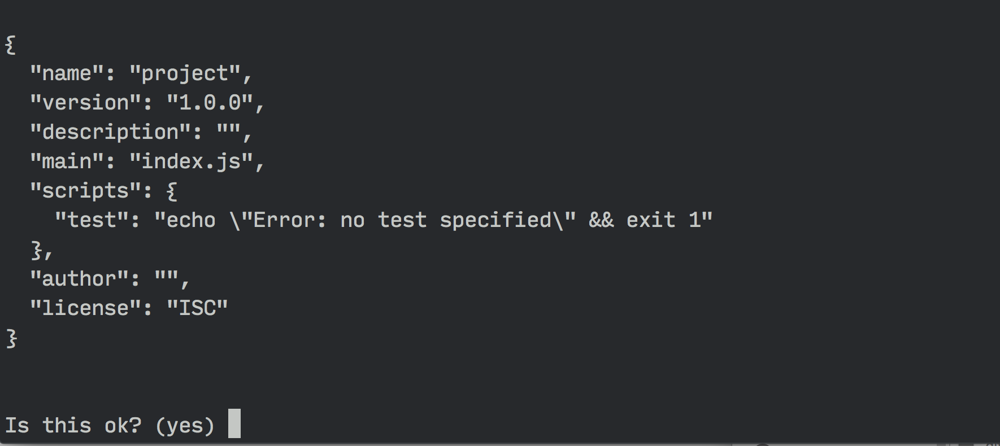

Gulp cho người mới bắt đầu
Gulp là gì?
Gulp là một công cụ giúp bạn tự động hóa nhiều task (nhiệm vụ) trong quá trình phát triển web. Nó thường được sử dụng để làm các tác vụ front end như:
- Tạo ra một web server
- Reload trình duyệt một cách tự động bất cứ khi nào một file được lưu
- Sử dụng các preprocessor giống như Sass hoặc LESS
- Tối ưu hóa các tài nguyên như CSS, JavaScript và hình ảnh
Đây không phải là một danh sách toàn diện về những thứ mà Gulp có thể làm. Nếu muốn, bạn có thể tạo một generator web site tĩnh. Gulp cực kỳ mạnh mẽ, nhưng bạn cần học cách sử dụng Gulp nếu muốn tạo ra một quá trình (process) của riêng mình.
Bài viết này sẽ giúp bạn có những kiến thức cơ bản về Gulp sau đó bạn có thể tự mình khám phá mọi thứ.
Trước khi đi sâu vào Gulp, hãy nói về lý do tại sao bạn sử dụng Gulp mà không phải các công cụ khác.
Tại sao lại là Gulp?
Những công cụ như Gulp thường được đề cập như là "build tools" bởi vì chúng là những công cụ thực hiện các task trong quá trình xây dựng một website. Hai build tools phổ biến nhất hiện giờ là Gulp và Grunt. Tất nhiên, vẫn có những công cụ khác chẳng hạn như Broccoli, Brunch.
Có nhiều bài viết đề cập tới sự khác nhau giữa Grunt và Gulp và lý do tại sao bạn lại sử dụng công cụ này mà không phải là các công cụ khác. Nhưng điểm khác biệt chính là cách bạn cấu hình một workflow với chúng. Gulp cấu hình ngắn hơn và đơn giản hơn khi so sánh với Grunt. Gulp cũng chạy nhanh hơn.
Cái chúng ta sẽ làm
Khi kết thúc bài viết này, bạn sẽ có một workflow thực hiện các task sau:
- Tạo ra một web server
- Biên dịch Sass thành CSS
- Refesh trình duyệt tự động bất cứ khi nào bạn lưu một file
- Tối ưu hóa các tài nguyên (CSS, JS, fonts, và hình ảnh) cho phiên bản production
Bạn cũng sẽ học cách nối một chuỗi các task khác nhau vào một lệnh đơn giản.
Hãy bắt đầu bằng cách cài đặt Gulp trên máy tính của bạn.
Cài đặt Gulp
Bạn cần cài đặt Node.js trước khi có thể cài đặt Gulp.
Sau khi đã cài đặt Node, bạn có thể cài đặt Gulp bằng cách sử dụng lệnh sau:
$ sudo npm install gulp -gChú ý: chỉ những người sử dụng Mac mới cần sử dụng từ khóa sudo
npm install là lệnh sử dụng Node Package Manager (npm) để cài đặt Gulp trên máy tính của bạn.
Cờ -g trong lệnh này nói với npm cài Gulp với phạm vi toàn cục trên máy tính của bạn, nó cho phép sử dụng lệnh gulp ở bất kỳ đâu trên hệ thống của bạn.
Bây giờ Gulp đã được cài đặt, hãy tạo ra một dự án sử dụng Gulp.
Tạo một Gulp project
Đầu tiên, chúng ta sẽ tạo ra một thư mục project. Đây sẽ là thư mục gốc của dự án. Di chuyển vào thư mục project và chạy lệnh npm init:
# ... from within our project folder
$ npm initLệnh npm init sẽ tạo ra một file package.json lưu trữ các thông tin về project, như các dependencies được sử dụng trong dự án (Gulp là một dependency).
npm init sẽ yêu cầu bạn xác nhận:

Khi file package.json đã được tạo, chúng ta có thể cài đặt Gulp vào dự án bằng cách sử dụng lệnh:
$ npm install gulp --save-devLệnh này sẽ cài đặt Gulp vào project của bạn thay vì cài đặt toàn cục.
Cờ --save-dev sẽ thêm gulp như một dev dependency trong package.json.
Nếu kiểm tra thư mục project khi lệnh đã thực thi xong, bạn sẽ thấy có thêm thư mục node_modules. Bạn cũng nhìn thấy thư mục gulp trong node_modules.
Chúng ta gần như đã sẵn sàng để bắt đầu làm việc với Gulp. Nhưng trước khi làm điều đó, chúng ta cần xác định cách chúng ta sử dụng Gulp cho project, và một phần trong đó là chọn một cấu trúc thư mục.
Chọn cấu trúc thư mục
Gulp đủ linh hoạt để làm việc với mọi cấu trúc thư mục. Trong bài viết này, chúng ta sẽ sử dụng một cấu trúc thường thấy:
|- app/
|- css/
|- fonts/
|- images/
|- index.html
|- js/
|- scss/
|- dist/
|- gulpfile.js
|- node_modules/
|- package.jsonTrong cấu trúc này, chúng ta sẽ sử dụng thư mục app cho mục đích phát triển, trong khi thư mục dist (distribution) được sử dụng để chứa các file đã được tối ưu cho web site production.
Bây giờ, hãy bắt đầu bằng cách tạo ra Gulp task đầu tiên của bạn trong gulpfile.js, cái lưu trữ tất cả cấu hình của Gulp.
Viết Gulp task đầu tiên
Bước đầu tiên để sử dụng Gulp là require trong gulpfile.
var gulp = require('gulp');Câu lệnh require nói với Node tìm kiếm trong thư mục node_modules package có tên gulp. Khi package được tìm thấy, chúng ta gán nội dung tới biến gulp.
Bây giờ chúng ta có thể viết một gulp task. Cú pháp cơ bản như sau:
gulp.task('task-name', function() {
// Stuff here
});task-name là tên của task, cái sử dụng khi bạn muốn chạy một task trong Gulp. Bạn cũng có thể chạy task đó trong command line bằng lệnh gulp task-name.
Để kiểm tra, tạo một task hello, cái in ra "Hello Zell".
gulp.task('hello', function() {
console.log('Hello Zell');
});Chúng ta có thể chạy task với lệnh gulp hello.
$ gulp helloLệnh trên sẽ in ra "Hello Zell".
Thực tế, các Gulp task sẽ phức tạp hơn một chút. Nó thường chứa hơn 2 phương thức Gulp, cộng với nhiều plugin của Gulp.
Một task thực sự sẽ giống như thế này:
gulp.task('task-name', function () {
return gulp.src('source-files') // Get source files with gulp.src
.pipe(aGulpPlugin()) // Sends it through a gulp plugin
.pipe(gulp.dest('destination')) // Outputs the file in the destination folder
})gulp.src nói với Gulp task các file được sử dụng, trong khi gulp.dest nói với Gulp nơi chứa các file kết quả khi task hoàn tất.
Hãy thử xây dựng một task thực sự, biên dịch các file Sass thành CSS.
Preprocessing với Gulp
Chúng ta có thể biên dịch Sass thành CSS trong Gulp với plugin gulp-sass. Bạn có thể cài đặt với lệnh npm install như đã làm với gulp.
Chúng ta cũng thêm cờ --save-dev để đảm bảo gulp-sass được thêm vào devDependencies trong package.json.
$ npm install gulp-sass --save-dev
Chúng ta cũng cần require gulp-sass như đã làm với gulp trước khi có thể sử dụng:
var gulp = require('gulp');
// Requires the gulp-sass plugin
var sass = require('gulp-sass');Chúng ta có thể sử dụng gulp-sass bằng cách thay thế aGulpPlugin() với sass(). Chúng ta sẽ đặt tên task biên dịch Sass thành CSS là sass.
gulp.task('sass', function(){
return gulp.src('source-files')
.pipe(sass()) // Using gulp-sass
.pipe(gulp.dest('destination'))
});Chúng cần cung cấp cho task sass các file nguồn và một thư mục đích để chứa các file CSS, vì thế hãy tạo một file styles.scss trong thư mục app/scss. Đây là file thay thế cho source-files trong phương thức gulp.src.
Chúng ta cũng muốn lưu file kết quả styles.css tới thư mục app/css, thay thế destination trong phương thức gulp.dest với app/css.
gulp.task('sass', function(){
return gulp.src('app/scss/styles.scss')
.pipe(sass()) // Converts Sass to CSS with gulp-sass
.pipe(gulp.dest('app/css'))
});Bạn có thể kiểm tra task sass đã làm việc chính xác chưa bằng cách thêm một hàm Sass trong file styles.scss.
// styles.scss
.testing {
width: percentage(5/7);
}Nếu chạy gulp sass trong command line, bạn sẽ thấy file styles.css trong thư mục app/css. Ngoài ra, nó sẽ có nội dung như sau:
/* styles.css */
.testing {
width: 71.42857%;
}Đó là cách chúng ta kiểm tra task sass đã làm việc hay chưa.
Thỉnh thoảng chúng ta cần biên dịch nhiều hơn một file .scss thành CSS. Chúng ta có thể làm điều này với Node globs.
Globbing trong Node
Globs giống như regular expressions, nhưng dành riêng cho đường dẫn file.
Hầu hết các workflow với Gulp thường chỉ yêu cầu 4 globbing pattern sau:
- *.scss: * là ký tự đại diện có nghĩa phù hợp với mọi pattern trong thư mục hiện tại. Trong trường hợp này, là tất cả file kết thúc với .scss trong thư mục gốc (project).
- **/*.scss: Tất cả các file kết thúc với .scss trong thư mục root và các thư mục con.
- !not-me.scss: ! báo hiệu Gulp sẽ bỏ qua pattern phù hợp. Trong trường hợp này file not-me.scss sẽ được bỏ qua.
- *.+(scss|sass): Dấu + và () cho phép Gulp kết hợp nhiều pattern, các pattern khác nhau được ngăn cách bởi ký tự | .Trong trường hợp này là bất kỳ file kết thúc với .scss hoặc .sass trong thư mục gốc.
Khi biết globbing, chúng ta có thể thay thế app/scss/styles.scss với pattern scss/**/*.scss, nó sẽ lấy bất kỳ file nào có phần mở rộng .scss trong thư mục app/scss hoặc trong thư mục con.
gulp.task('sass', function() {
return gulp.src('app/scss/**/*.scss') // Gets all files ending with .scss in app/scss and children dirs
.pipe(sass())
.pipe(gulp.dest('app/css'))
})Mọi file Sass được tìm thấy trong app/scss sẽ tự động thêm vào task sass ở trên. Nếu bạn thêm một file print.scss tới project, bạn sẽ thấy print.css trong app/css.
Hiện giờ chúng đã quản lý được việc biên dịch các file Sass thành CSS với một lệnh duy nhất. Câu hỏi là, chúng ta sẽ phải chạy lệnh gulp sass bất cứ khi nào chúng ta thay đổi file sass để biên dịch Sass thành CSS?
May mắn, chúng ta có thể nói với Gulp tự động chạy task sass bất cứ khi nào một file được lưu thông qua một process gọi là "watching".
Theo dõi sự thay đổi của các file Sass
Gulp cung cấp cho chúng ta phương thức watch, cái theo dõi nếu một file được lưu. Cú pháp của watch là:
// Gulp watch syntax
gulp.watch('files-to-watch', ['tasks', 'to', 'run']); Nếu chúng ta muốn theo dõi tất cả các file Sass và chạy task sass bất cứ khi nào một file Sass được lưu, chúng ta chỉ cần thay thế files-to-watch với app/scss/**/*.scss, và ['tasks', 'to', 'run'] với ['sass']:
// Gulp watch syntax
gulp.watch('app/scss/**/*.scss', ['sass']); Trong thực tế, chúng ta sẽ muốn theo dõi nhiều kiểu file một lúc. Để làm điều này, chúng ta có thể gộp nhiều tiến trình theo dõi vào một task watch:
gulp.task('watch', function(){
gulp.watch('app/scss/**/*.scss', ['sass']);
// Other watchers
})Nếu bạn chạy lệnh gulp watch, bạn sẽ thấy Gulp bắt đầu theo dõi ngay lập tức.
Và nó sẽ tự động chạy task sass bất cứ khi nào bạn lưu một file .scss
Bước tiếp theo là làm cho Gulp reload lại trình duyệt bất cứ khi nào chúng ta lưu một file .scss với sự trợ giúp của Browser Sync.
Live-reloading với Browser Sync
Browser Sync giúp việc phát triển web dễ dàng hơn bằng cách tạo ra một web server cái giúp chúng ta live-reloading dễ dàng.
Đầu tiên chúng sẽ cài đặt Browser Sync:
$ npm install browser-sync --save-devBạn có thể để ý rằng không có tiền tố gulp- khi cài đặt Browser Sync. Bởi vì Browser Sync không phải là một plugin của Gulp.
Để sử dụng, chúng ta sẽ require Browser Sync.
var browserSync = require('browser-sync').create();Chúng ta cần tạo task browserSync để cho phép Gulp khởi tạo một server sử dụng Browser Sync. Khi chạy server, chúng ta cần cho Browser Sync biết thư mục gốc của server. Trong trường hợp này, nó là thư mục "app":
gulp.task('browserSync', function() {
browserSync.init({
server: {
baseDir: 'app'
},
})
})Chúng ta cũng thay đổi task sass một chút vì Browser Sync có thể tiêm các style CSS mới (cập nhật CSS) vào trình duyệt, bất cứ khi nào task sass chạy.
gulp.task('sass', function() {
return gulp.src('app/scss/**/*.scss') // Gets all files ending with .scss in app/scss
.pipe(sass())
.pipe(gulp.dest('app/css'))
.pipe(browserSync.reload({
stream: true
}))
});Chúng ta đã cấu hình Browser Sync. Bây giờ chúng ta chạy cả 2 task watch và browserSync cùng lúc để live-reloading.
Khá phiền phức khi mở 2 của sổ command line và chạy gulp browserSync và gulp watch, hãy để Gulp chạy chúng đồng thời bằng cách nói cho task watch rằng browserSync phải hoàn thành trước khi watch được cho phép chạy.
Chúng ta có thể làm điều này bằng cách thêm tham số thứ 2 tới watch task. Đây là cú pháp:
gulp.task('watch', ['array', 'of', 'tasks', 'to', 'complete','before', 'watch'], function (){
// ...
})Và trong trường hợp này chúng ta thêm browserSync task.
gulp.task('watch', ['browserSync'], function (){
gulp.watch('app/scss/**/*.scss', ['sass']);
// Other watchers
})Chúng ta cũng muốn đảm bảo rằng sass sẽ chạy trước watch vì CSS sẽ luôn là mới nhất bất kỳ khi nào chúng ta chạy một lệnh Gulp.
gulp.task('watch', ['browserSync', 'sass'], function (){
gulp.watch('app/scss/**/*.scss', ['sass']);
// Other watchers
});Bây giờ nếu bạn chạy gulp watch trong command line, Gulp sẽ bắt đầu cả 2 sass và browserSync task đồng thời. Khi cả 2 task hoàn thành, watch sẽ chạy.
Tại cùng thời điểm, một cửa sổ trình duyệt sẽ trỏ đến app/index.html sẽ bật lên. Nếu bạn thay đổi file styles.scss, bạn sẽ thấy trình duyệt sẽ tự động reload.
Cuối cùng, làm thế nào nếu bạn muốn trình duyệt tự động reload khi bất kỳ file HTML hoặc JavaScript được lưu?
Chúng ta có thể làm bằng cách thêm 2 hoặc nhiều hơn các tiến trình theo dõi, và gọi hàm browserSync.reload khi một file được lưu:
gulp.task('watch', ['browserSync', 'sass'], function (){
gulp.watch('app/scss/**/*.scss', ['sass']);
// Reloads the browser whenever HTML or JS files change
gulp.watch('app/*.html', browserSync.reload);
gulp.watch('app/js/**/*.js', browserSync.reload);
});Đến đây chúng ta đã làm 3 thứ:
- Khởi tạo một web server
- Sử dụng Sass preprocessor
- Reloading trình duyệt tự động bất cứ khi nào một file được lưu
Phần tiếp theo sẽ đề cập tới việc tối ưu các tài nguyên. Chúng ta sẽ bắt đầu với việc tối ưu hóa các file CSS và JavaScript.
Tối ưu hóa các file CSS và JavaScript
Các lập trình viên có 2 task cần thực hiện khi cố gắng tối ưu hóa các file CSS và JavaScript cho phiên bản production: nối file và minification.
Một vấn đề các lập trình viên phải đối mặt là khó có thể nối các file js theo thứ tự chính xác.
Ví dụ chúng ta có 3 thẻ script trong file index.html.
<body>
<!-- other stuff -->
<script src="js/lib/a-library.js"></script>
<script src="js/lib/another-library.js"></script>
<script src="js/main.js"></script>
</body>Các script này nằm trong 2 thư mục khác nhau. Rất khó để nối chúng với những plugin kiểu như gulp-concatenate.
Thật may mắn, chúng ta có thể sử dụng gulp-useref để giải quyết vấn đề này.
Gulp-useref nối tất cả file CSS và JavaScript thành một file bằng cách tìm kiếm một comment bắt đầu với "<!--build:" và kết thúc với "<!-- endbuild -->". Giống như thế này:
<!-- build:<type> <path> -->
... HTML Markup, list of script / link tags.
<!-- endbuild --><type> có thể là js, css hoặc remove. Thường thì type sẽ là kiểu file chúng ta muốn nối. Nếu bạn thiết lập type là remove Gulp sẽ xóa toàn bộ block mà không phát sinh một file nào.
<path> là đường dẫn tới file đã được nối.
Ở đây, chúng ta muốn file JavaScript đã được nối sẽ nằm trong thư mục js và có tên là main.min.js. Cú pháp sẽ như sau:
<!--build:js js/main.min.js -->
<script src="js/lib/a-library.js"></script>
<script src="js/lib/another-library.js"></script>
<script src="js/main.js"></script>
<!-- endbuild -->Bây giờ hãy cấu hình gulp-useref plugin trong gulpfile. Chúng sẽ cần cài đặt và require trước.
$ npm install gulp-useref --save-devvar useref = require('gulp-useref');Thiết lập task useref tương tự như các task chúng ta đã làm:
gulp.task('useref', function(){
return gulp.src('app/*.html')
.pipe(useref())
.pipe(gulp.dest('dist'))
});Bây giờ nếu bạn chạy task useref, Gulp sẽ đọc các file trong 3 thẻ script và nối chúng thành thành một file main.min.js trong thư mục dist/js
Tuy nhiên file kết quả chưa được minify. Chúng ta sẽ sử dụng gulp-uglify plugin để minifying các file JavaScript. Chúng ta cũng cần một plugin thứ 2 gọi là gulp-if để đảm bảo chỉ minify các file JavaScript.
$ npm install gulp-uglify --save-dev // Other requires...
var uglify = require('gulp-uglify');
var gulpIf = require('gulp-if');
gulp.task('useref', function(){
return gulp.src('app/*.html')
.pipe(useref())
// Minifies only if it's a JavaScript file
.pipe(gulpIf('*.js', uglify()))
.pipe(gulp.dest('dist'))
});Gulp sẽ tự động minify "main.min.js" bất cứ khi nào bạn chạy useref task.
Gulp-useref cũng sẽ tự động thay thế tất cả các thẻ script trong "<!-- build:" và "<!-- endbuild --> thành một thẻ duy nhất trỏ tới "js/main.min.js".

Chúng ta có thể sử dụng phương thức tương tự để nối các file CSS (nếu bạn có nhiều hơn một file). Chúng ta sẽ làm theo tiến trình tương tự như nối các file js và thêm một build comment.
<!--build:css css/styles.min.css-->
<link rel="stylesheet" href="css/styles.css">
<link rel="stylesheet" href="css/another-stylesheet.css">
<!--endbuild-->Để minify file CSS đã được nối. Chúng ta cần sử dụng package gulp-cssnano.
$ npm install gulp-cssnanovar cssnano = require('gulp-cssnano');
gulp.task('useref', function(){
return gulp.src('app/*.html')
.pipe(useref())
.pipe(gulpIf('*.js', uglify()))
// Minifies only if it's a CSS file
.pipe(gulpIf('*.css', cssnano()))
.pipe(gulp.dest('dist'))
});Bây giờ chúng ta đã tối ưu hóa các file CSS và JavaScript bất kì khi nào bạn chạy useref task.
Tiếp theo hãy tối ưu hình ảnh
Tối ưu hóa ảnh
Chúng ta sẽ cần sử dụng gulp-imagemin để tối ưu hóa hình ảnh.
$ npm install gulp-imagemin --save-devvar imagemin = require('gulp-imagemin');Chúng ta có thể tối ưu hóa ảnh png, jpg, gif và thậm chí là svg với gulp-imagemin. Hãy tạo một images task.
gulp.task('images', function(){
return gulp.src('app/images/**/*.+(png|jpg|gif|svg)')
.pipe(imagemin())
.pipe(gulp.dest('dist/images'))
});Các kiểu file khác nhau có thể tối ưu hóa theo nhiều cách, bạn có thể thêm tùy chọn imagemin để tối ưu từng loại file.
Ví dụ, bạn có thể tạo interlaced GIFs bằng cách thiết lập tùy chọn interlaced là true.
gulp.task('images', function(){
return gulp.src('app/images/**/*.+(png|jpg|jpeg|gif|svg)')
.pipe(imagemin({
// Setting interlaced to true
interlaced: true
}))
.pipe(gulp.dest('dist/images'))
});Bạn có thể thử nghiệm các tùy chọn khác nếu muốn.
Tuy nhiên tối ưu hóa các hình ảnh, là một tiến trình cực kỳ chậm bạn sẽ không muốn lặp lại trừ khi cần thiết. Để làm điều này chúng ta có thể sử dụng gulp-cache plugin.
$ npm install gulp-cache --save-devvar cache = require('gulp-cache');
gulp.task('images', function(){
return gulp.src('app/images/**/*.+(png|jpg|jpeg|gif|svg)')
// Caching images that ran through imagemin
.pipe(cache(imagemin({
interlaced: true
})))
.pipe(gulp.dest('dist/images'))
});Chúng ta đã gần hoàn thành quá trình tối ưu hóa. Chỉ còn một thư mục chúng ta cần chuyển từ thư mục "app" tới thư mục "dist", đó là thư mục fonts. Hãy làm điều đó ngay.
Copy Fonts tới Dist
Các file font đã được tối ưu hóa, vì vậy chúng ta không cần làm gì thêm. Tất cả những gì chúng ta cần làm là copy các font tới thư mục dist.
Chúng ta có thể copy các file với Gulp đơn giản bằng cách sử dụng gulp.src và gulp.dest mà không cần plugin nào.
gulp.task('fonts', function() {
return gulp.src('app/fonts/**/*')
.pipe(gulp.dest('dist/fonts'))
})Bây giờ Gulp sẽ copy các font từ thư mục "app" tới "dist" bất kỳ khi nào bạn chạy gulp fonts.
Chúng ta đã có 6 task khác nhau trong gulpfile, và mỗi task được gọi riêng rẽ trong command line, điều này khá phiền phức và chúng ta muốn gộp tất cả với trong một lệnh.
Trước khi làm điều này, chúng ta hãy xem cách xóa các file đã phát sinh một cách tự động.
Tự động xóa các file đã tạo ra
Khi tạo ra các file một cách tự động, chúng ta sẽ muốn đảm bảo rằng các file không còn sử dụng sẽ không tồn tại ở bất kỳ đâu mà chúng ta không biết.
Quá trình được gọi làm sạch (cleaning) (hay đơn giản là xóa các file)
Chúng ta sử dụng del để làm điều này.
npm install del --save-devvar del = require('del');Hàm del nhận một mảng node globs cái nói với nó thư mục nào cần xóa.
Thiết lập giống như hello task trong ví dụ đầu tiên.
gulp.task('clean:dist', function() {
return del.sync('dist');
})
Bây giờ Gulp sẽ xóa thư mục "dist" bất kỳ khi nào lệnh gulp clean:dist chạy.
Chú ý: Chúng ta không cần lo lắng về việc xóa thư mục dist/images bởi vì gulp-cache đã lưu ảnh trên hệ thống local của bạn.
Để xóa cache trên hệ thống local, bạn có thể tạo một task tên là "cache:clear".
gulp.task('cache:clear', function (callback) {
return cache.clearAll(callback)
})Bây giờ hãy kết hợp các task với nhau!
Kết hợp các Gulp tasks
Hãy tổng kết cái chúng ta đã làm. Chúng ta đã tạo ra 2 tập hợp các Gulp task.
Đầu tiên là cho quá trình phát triển, chúng ta biên dịch Sass thành CSS, theo dõi sự thay đổi và reload lại trình duyệt khi có sự thay đổi.
Thứ 2 là quá trình tối ưu, nơi chúng ta chuẩn bị các file cho một website hoàn chỉnh. Chúng ta tối ưu hóa CSS, JavaScript, và hình ảnh trong tiến trình này và copy các font từ thư mục app tới thư mục dist.
Chúng ta đã gộp tập hợp các task đầu tiên vào một một lệnh gulp watch:
gulp.task('watch', ['browserSync', 'sass'], function (){
// ... watchers
})Tập hợp thứ 2 gồm các task chúng ta cần chạy để tạo ra một website hoàn chỉnh. Nó gồm: clean:dist, sass, useref, images và fonts. Chúng ta sẽ tạo ra một task build để kết hợp mọi thứ cùng nhau.
gulp.task('build', [`clean`, `sass`, `useref`, `images`, `fonts`], function (){
console.log('Building files');
})Thật không may, chúng ta không thể viết task build theo cách này bởi vì Gulp chạy tất cả các task trong tham số thứ 2 đồng thời.
Nghĩa là useref, images, hoặc thậm chí là fonts sẽ hoàn thành trước khi clean kết thúc, và toàn bộ thư mục dist sẽ bị xóa.
Vì vậy, cần đảm bảo clean hoàn thành trước các task còn lại, chúng ta cần sử dụng một plugin là run-sequence.
$ npm install run-sequence --save-devĐây là cú pháp để chạy các task tuần tự
var runSequence = require('run-sequence');
gulp.task('task-name', function(callback) {
runSequence('task-one', 'task-two', 'task-three', callback);
});Khi task-name được gọi, Gulp sẽ chạy task-one đầu tiên, Khi task-one kết thúc, Gulp sẽ tự động bắt đầu task-two. Cuối cùng, khi task-two hoàn thành, Gulp sẽ chạy task-three.
run-sequence cũng cho phép chạy các task đồng thời nếu bạn đặt chúng trong một mảng:
gulp.task('task-name', function(callback) {
runSequence('task-one', ['tasks','two','run','in','parallel'], 'task-three', callback);
});Trong trường hợp này, Gulp sẽ chạy task-one. Khi task-one hoàn thành, Gulp sẽ chạy tất cả các task còn lại trong mảng tham số thứ 2 đồng thời. Tất cả các task trong tham số thứ 2 phải hoàn thành trước khi task-three có thể chạy.
Bây giờ chúng ta sẽ tạo ra một task cái đảm bảo clean:dist chạy đầu tiên, sau đó là các task khác:
gulp.task('build', function (callback) {
runSequence('clean:dist',
['sass', 'useref', 'images', 'fonts'],
callback
)
})Để tạo sự thống nhất, chúng ta có thể xây dựng một chuỗi tuần tự với group đầu tiên. Lần này hãy sử dụng default cho tên task:
gulp.task('default', function (callback) {
runSequence(['sass','browserSync'], 'watch',
callback
)
})Tại sao lại là default? Bởi vì khi bạn có một task tên là default, bạn có thể chạy nó đơn giản bằng cách nhập lệnh gulp trong command line.
Cuối cùng, đây là github repo cho tất cả những thứ chúng ta đã làm!
Kết luận
Chúng ta đã học những thứ cơ bản nhất về Gulp và tạo một workflow, có khả năng biên dịch Sass thành CSS trong khi theo dõi sự thay đổi các file HTML và JS tại cùng thời điểm. Chúng ta có thể chạy task này với lệnh gulp trong command line.
Chúng ta cũng xây dựng một task thứ hai, build, cái tạo ra thư mục dist cho phiên bản production. Chúng ta biên dịch Sass thành CSS, tối ưu hóa tất cả các tài nguyên, và copy các thư mục cần thiết vào thư mục dist. Để chạy task này chúng ta chỉ cần nhập gulp build trong command line.
Cuối cùng, chúng ta có một clean task cái xóa thư mục dist.
Chúng ta đã tạo ra một workflow có đủ khả năng đáp ứng cho hầu hết các web develper. Còn rất nhiều thứ về Gulp và workflow mà chúng ta có thể khám phá để làm cho quá trình này tốt hơn. Đây là một số gợi ý cho bạn:
Cho phát triển:
- Sử dụng Autoprefixer để tự động thêm prefix vào code CSS
- Thêm Sourcemaps để dễ dàng debug hơn
- Tạo ra Sprites với sprity
- Biên dịch chỉ các file có thay đổi với gulp-changed
- Viết ES6 với Babel hoặc Traceur
- Modular hóa các file JavaScript với Browserify, webpack, hoặc jspm
- Modular hóa HTML với các template engine như Handlebars hoặc Swig
- Chia gulpfile thành các file nhỏ hơn với require-dir
- Phát sinh một Modernizr script tự động với gulp-modernizr
Cho tối ưu hóa:
Ngoài các quá trình phát triển và tối ưu hóa, bạn cũng có thể viết unit tests với gulp-jasmine và thậm chí triển khai thư mục dist tới productions server tự động với gulp-rync.